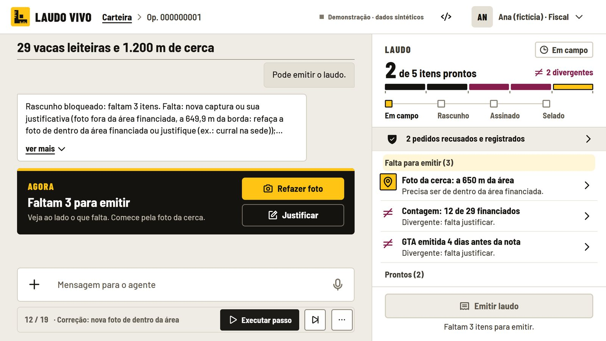
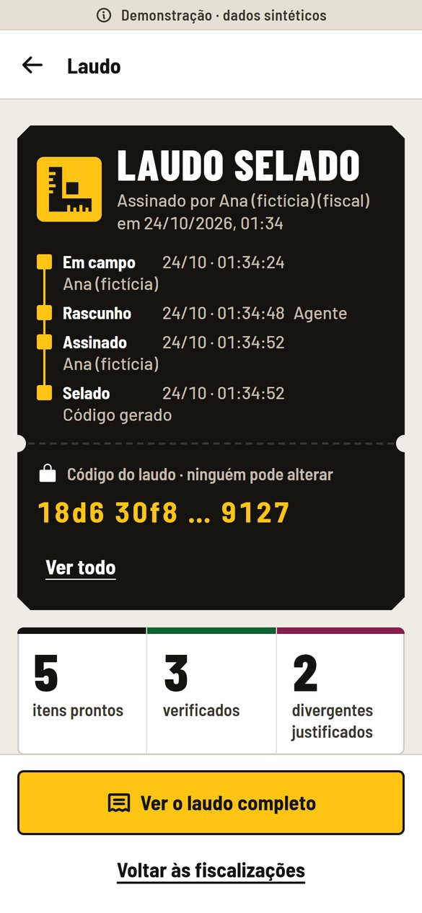

01
Triagem e método
Por que a operação caiu na amostra e qual método a regra pede, antes de sair para o campo.
regrasUm agente conduz a visita da fiscal pelo celular, confere vídeo, foto, nota e GTA contra as regras do MCR e entrega o laudo pronto para ela assinar, com a trilha de cada item.
Demonstração com dados sintéticos e fiscal fictícia · abre no celular, sem cadastro.


Por que agora
A Res. CMN 5.267 entrou em vigor: método verificável, amostra com critério e registro para o Banco Central.
das operações com gado em Goiás ficam fora do satélite obrigatório: só 301 de 19.009 caem nele.
desclassificações por aplicação não comprovada em 2026, até 13/10, no Brasil. Em 2025 inteiro, foram 349.
O que falta
Nota, GTA, contagem e foto da cerca viram papel avulso e laudo digitado depois da visita. Quando o banco precisa mostrar como fiscalizou, a trilha não existe.
Imagem e alerta mostram se há pasto ou lavoura na gleba. Não conferem a nota, a GTA nem se os animais são os financiados.
Cada item financiado ganha a sua prova: vídeo contado, foto dentro da gleba, nota e GTA conferidas, e a regra do MCR que decide.
Como funciona
A fiscal conversa com o agente por texto ou voz. Ele diz a próxima prova, confere o que chega e não deixa o laudo sair com pendência.
Por que a operação caiu na amostra e qual método a regra pede, antes de sair para o campo.
regrasVídeo do lote no brete com contagem por visão computacional, foto com GPS dentro da gleba e a série do Sentinel-2.
visão + satéliteA IA lê a nota impressa e a GTA e pede só o que faltou; as regras conferem dígito verificador, somas e datas.
leitura + regrasA fiscal revisa e assina com PIN. O selo é uma cadeia de hash: uma cópia alterada não confere.
humano assinaQuem conversa não confere
O que um formulário não consegue: a nota fotografada, a GTA, o vídeo do curral e o que a fiscal diz em campo.
Política e verificador determinísticos dão o status de cada item e citam o item do MCR 2-7 em que se apoiam.
O agente monta o rascunho; nada sai sem a revisão e o PIN de quem responde pela fiscalização.
Resultados, com os limites
defeitos plantados achados
IC 95%: 70–100%operações válidas bloqueadas
IC 95%: 0–28%ataques da equipe passaram; no red-team cego, 6/30
IC: 0–5% e 10–37%toques na tela: agente × formulário
fiscal simuladoregras apontam o item da norma
28 com o texto literalTeste de 24 casos sintéticos, congelado em 16/10/2026; fiscal simulado; nenhum cliente ou piloto ainda. Os relatórios e o código estão no repositório público.
Para quem
Segurança e LGPD
No produto, os modelos rodam na máquina da cooperativa. A demonstração pública usa só dados sintéticos e, para a mensagem livre, um LLM em nuvem.
LLM de 4B, Whisper e YOLOX na máquina: nenhum dado sai dela.
CPF e chave da nota mascarados nos registros; brutos por 90 dias e depois o expurgo.
A cooperativa é a controladora; nós operamos. Parecer jurídico de LGPD e sigilo ainda a fazer.
Modelo de negócio
Nunca pelo resultado do laudo e nunca pelo mutuário da operação. Preços-alvo do plano de negócio, ainda não testados com cliente.
De 20 a 50 operações já fiscalizadas, comparando o laudo do Laudo Vivo com o que foi feito. Depois, o Piloto Fundador.